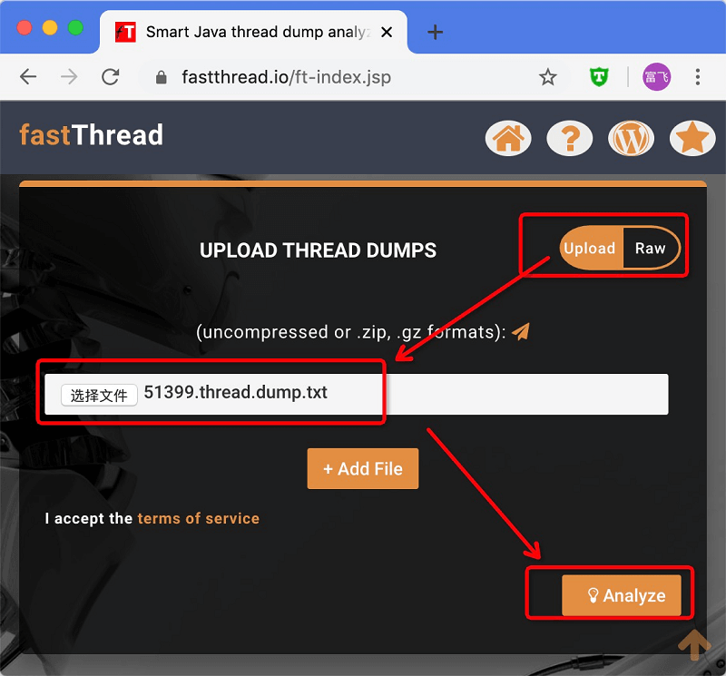
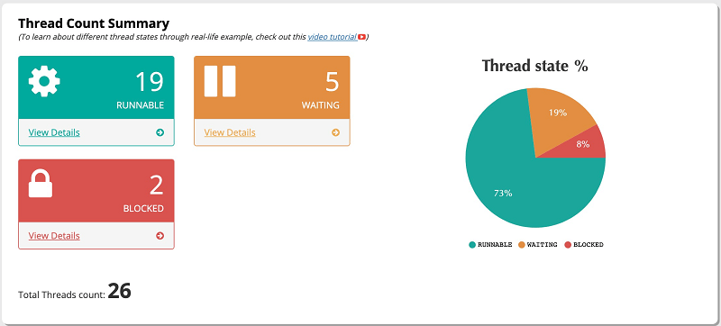
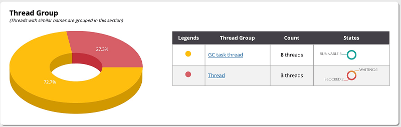
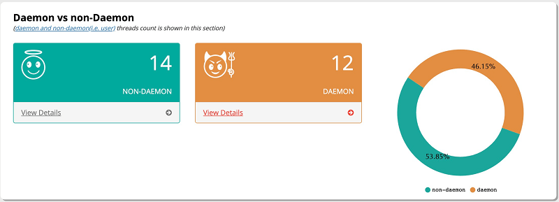
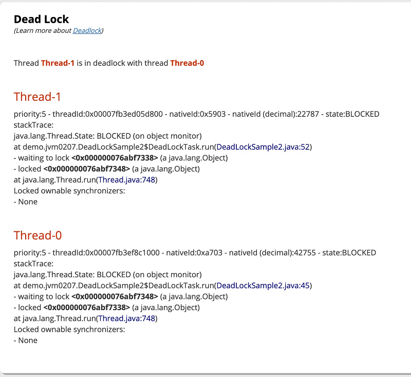
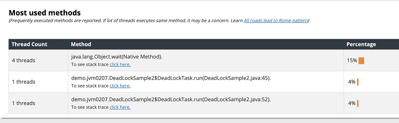
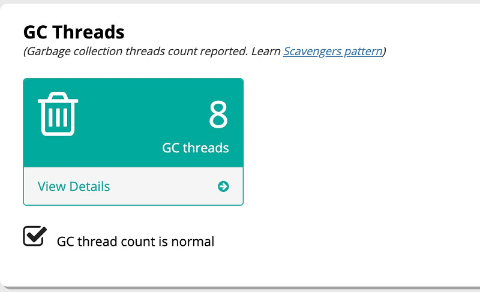
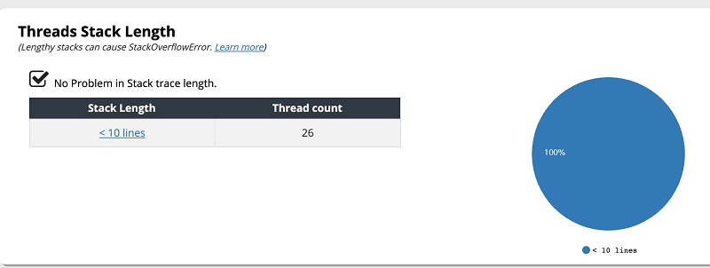
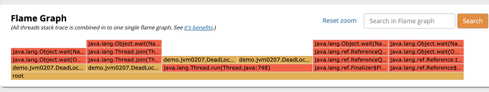

- 01 阅读此专栏的正确姿势.md.html
- 02 环境准备：千里之行，始于足下.md.html
- 03 常用性能指标：没有量化，就没有改进.md.html
- 04 JVM 基础知识：不积跬步，无以至千里.md.html
- 05 Java 字节码技术：不积细流，无以成江河.md.html
- 06 Java 类加载器：山不辞土，故能成其高.md.html
- 07 Java 内存模型：海不辞水，故能成其深.md.html
- 08 JVM 启动参数详解：博观而约取、厚积而薄发.md.html
- 09 JDK 内置命令行工具：工欲善其事，必先利其器.md.html
- 10 JDK 内置图形界面工具：海阔凭鱼跃，天高任鸟飞.md.html
- 11 JDWP 简介：十步杀一人，千里不留行.md.html
- 12 JMX 与相关工具：山高月小，水落石出.md.html
- 13 常见的 GC 算法（GC 的背景与原理）.md.html
- 14 常见的 GC 算法（ParallelCMSG1）.md.html
- 15 Java11 ZGC 和 Java12 Shenandoah 介绍：苟日新、日日新、又日新.md.html
- 16 Oracle GraalVM 介绍：会当凌绝顶、一览众山小.md.html
- 17 GC 日志解读与分析（基础配置）.md.html
- 18 GC 日志解读与分析（实例分析上篇）.md.html
- 19 GC 日志解读与分析（实例分析中篇）.md.html
- 20 GC 日志解读与分析（实例分析下篇）.md.html
- 21 GC 日志解读与分析（番外篇可视化工具）.md.html
- 22 JVM 的线程堆栈等数据分析：操千曲而后晓声、观千剑而后识器.md.html
- 23 内存分析与相关工具上篇（内存布局与分析工具）.md.html
- 24 内存分析与相关工具下篇（常见问题分析）.md.html
- 25 FastThread 相关的工具介绍：欲穷千里目，更上一层楼.md.html
- 26 面临复杂问题时的几个高级工具：它山之石，可以攻玉.md.html
- 27 JVM 问题排查分析上篇（调优经验）.md.html
- 28 JVM 问题排查分析下篇（案例实战）.md.html
- 29 GC 疑难情况问题排查与分析（上篇）.md.html
- 30 GC 疑难情况问题排查与分析（下篇）.md.html
- 31 JVM 相关的常见面试问题汇总：运筹策帷帐之中，决胜于千里之外.md.html
- 32 应对容器时代面临的挑战：长风破浪会有时、直挂云帆济沧海.md.html
25 FastThread 相关的工具介绍：欲穷千里目，更上一层楼
FastThread 简介
在前面的章节里，我们知道了可以打印出来 JVM 的所有线程信息，然后进行分析。然而所有的线程信息都很长，看起来又差不多，每次去看都让人头大。
所以，每当我去分析线程都在想，要是有工具能帮我把一般情况汇总，并自动帮我分析分析 JVM 线程情况就好了。这里要介绍的 FastThread 就是这么一款工具。
FastThread 是一款线程转储(Thread Dump)分析工具，官网地址为：http://fastthread.io/ 。
这款工具由 tier1app 公司 开发和支持，这家公司现在主要提供 3 款 JVM 分析工具，除了 FastThread 还有：
- GCEasy，访问地址：https://gceasy.io/，详情请参考前面的文章 [《GC 日志解读与分析（番外篇可视化工具）》]。
- HeapHero，官网地址：https://heaphero.io/，顾名思义，这是一款 Heap Dump 分析工具。
FastThread 工具可用来分析和定位问题，功能特征包括：
- 通用线程转储分析，FastThread 是一款通用的线程转储分析工具，可以通过 JVM 导出的线程转储，来进行根本原因排查分析（RCA，root cause analysis）。
- 提供在线分析功能，因为线程转储一般不会太大，所以只需上传我们导出的线程转储文件即可快速查看分析报告，而不需要在本地计算机下载和安装。使用非常方便。
- 提供直观的线程分析视图，通过仪表盘等形式的图形展示，使用起来既简单又容易理解。并对各种线程状态进行分类，比如阻塞、运行、定时等待、等待，以及重复的堆栈跟踪。通过这款工具，可以快速方便地解决可扩展性、性能问题和可用性问题。
- 支持 REST 方式的 API 接口调用，FastThread 是业界第一款支持 API 方式的线程转储分析工具。通过 API 接口，我们就可以通过脚本或者程序实现自动化分析，适用于进行批量的操作。
- 支持核心转储分析（Core Dump Analysis），Java 核心转储包括很多信息，但格式非常难以理解和解析。FastThread 可以分析 Java 核心转储文件，并以图形方式提供精确的信息。
- 分析 hs_err_pid 文件，进程崩溃（crashes）或致命错误(fatal error）会导致JVM异常终止。这时候 JVM 会自动生成 hs_err_pid 文件。这个文件中包含大量的信息，可以用 FastThread 来帮助我们进行分析。
顺便说一句，JVM 的线程转储不只是 Java 语言有，其他语言也是支持的，例如 Scala、Jython、JRuby 等等。
通过 FastThread 官方网站在线进行线程堆栈分析是“免费”的，下面我们通过示例程序来演示这款工具的使用。
示例程序与线程 Dump
基于前面《JVM 的线程堆栈数据分析》章节中的示例代码，我们简单修改一下，用来模拟死锁和线程等待的状态。
示例程序如下：
package demo.jvm0207;
import java.util.concurrent.TimeUnit;
import java.util.concurrent.atomic.AtomicBoolean;
public class DeadLockSample2 {
public static void main(String[] args) throws Exception {
DeadLockTask deadLockTask = new DeadLockTask();
// 多线程模拟死锁
new Thread(deadLockTask).start();
new Thread(deadLockTask).start();
// 等待状态
Thread wt = new WaitedThread();
wt.start();
// 当前线程等待另一个线程来汇合
wt.join();
}
private static class WaitedThread extends Thread {
@Override
public void run() {
synchronized (DeadLockSample2.class) {
try {
DeadLockSample2.class.wait();
} catch (InterruptedException e) {
e.printStackTrace();
}
}
}
}
// 简单的死锁; 分别锁2个对象
private static class DeadLockTask implements Runnable {
private Object lockA = new Object();
private Object lockB = new Object();
private AtomicBoolean flag = new AtomicBoolean(false);
public void run() {
try {
if (flag.compareAndSet(false, true)) {
synchronized (lockA) {
TimeUnit.SECONDS.sleep(2);
synchronized (lockB) {
System.out.println("死锁内部代码");
}
}
} else {
synchronized (lockB) {
TimeUnit.SECONDS.sleep(2);
synchronized (lockA) {
System.out.println("死锁内部代码");
}
}
}
} catch (Exception e) {
}
}
}
}
我们启动程序，会发现系统卡住不动。
然后我们可以用各种工具来探测和检查线程状态，如果有不了解的同学，可以参考前面的 《[JVM 的线程堆栈数据分析]》章节。
线程转储快照（Thread Dump）可用来辅助诊断 CPU 高负载、死锁、内存异常、系统响应时间长等问题。
所以我们需要先获取对应的 Thread Dump 文件：
# 查看本地 JVM 进程信息
jps -v
# 直接打印线程快照
jstack -l 51399
# 将线程快照信息保存到文件
jstack -l 51399 > 51399.thread.dump.txt
jstack 工具得到的线程转储信息大致如下所示：
Full thread dump Java HotSpot(TM) 64-Bit Server VM (25.162-b12 mixed mode):
"Thread-2" #15 prio=5 os_prio=31 tid=0x00007fb3ee805000 nid=0x5a03 in Object.wait() [0x000070000475d000]
java.lang.Thread.State: WAITING (on object monitor)
at java.lang.Object.wait(Native Method)
- waiting on <0x000000076abee388> (a java.lang.Class for demo.jvm0207.DeadLockSample2)
at java.lang.Object.wait(Object.java:502)
at demo.jvm0207.DeadLockSample2$WaitedThread.run(DeadLockSample2.java:25)
- locked <0x000000076abee388> (a java.lang.Class for demo.jvm0207.DeadLockSample2)
Locked ownable synchronizers:
- None
"Thread-1" #14 prio=5 os_prio=31 tid=0x00007fb3ed05d800 nid=0x5903 waiting for monitor entry [0x000070000465a000]
java.lang.Thread.State: BLOCKED (on object monitor)
at demo.jvm0207.DeadLockSample2$DeadLockTask.run(DeadLockSample2.java:52)
- waiting to lock <0x000000076abf7338> (a java.lang.Object)
- locked <0x000000076abf7348> (a java.lang.Object)
at java.lang.Thread.run(Thread.java:748)
Locked ownable synchronizers:
- None
"Thread-0" #13 prio=5 os_prio=31 tid=0x00007fb3ef8c1000 nid=0xa703 waiting for monitor entry [0x0000700004557000]
java.lang.Thread.State: BLOCKED (on object monitor)
at demo.jvm0207.DeadLockSample2$DeadLockTask.run(DeadLockSample2.java:45)
- waiting to lock <0x000000076abf7348> (a java.lang.Object)
- locked <0x000000076abf7338> (a java.lang.Object)
at java.lang.Thread.run(Thread.java:748)
Locked ownable synchronizers:
- None
"main" #1 prio=5 os_prio=31 tid=0x00007fb3ee006000 nid=0x2603 in Object.wait() [0x0000700002f15000]
java.lang.Thread.State: WAITING (on object monitor)
at java.lang.Object.wait(Native Method)
- waiting on <0x000000076abf7cf8> (a demo.jvm0207.DeadLockSample2$WaitedThread)
at java.lang.Thread.join(Thread.java:1252)
- locked <0x000000076abf7cf8> (a demo.jvm0207.DeadLockSample2$WaitedThread)
at java.lang.Thread.join(Thread.java:1326)
at demo.jvm0207.DeadLockSample2.main(DeadLockSample2.java:17)
Locked ownable synchronizers:
- None
JNI global references: 1358
Found one Java-level deadlock:
=============================
"Thread-1":
waiting to lock monitor 0x00007fb3ee01f698 (object 0x000000076abf7338，a java.lang.Object)，
which is held by "Thread-0"
"Thread-0":
waiting to lock monitor 0x00007fb3ee01f7f8 (object 0x000000076abf7348，a java.lang.Object)，
which is held by "Thread-1"
Java stack information for the threads listed above:
===================================================
"Thread-1":
at demo.jvm0207.DeadLockSample2$DeadLockTask.run(DeadLockSample2.java:52)
- waiting to lock <0x000000076abf7338> (a java.lang.Object)
- locked <0x000000076abf7348> (a java.lang.Object)
at java.lang.Thread.run(Thread.java:748)
"Thread-0":
at demo.jvm0207.DeadLockSample2$DeadLockTask.run(DeadLockSample2.java:45)
- waiting to lock <0x000000076abf7348> (a java.lang.Object)
- locked <0x000000076abf7338> (a java.lang.Object)
at java.lang.Thread.run(Thread.java:748)
Found 1 deadlock.
工具自动找到了死锁，另外几个处于等待状态的线程也标识了出来。当然，上面省略了其他线程的信息，例如：
Full thread dump Java HotSpot(TM) 64-Bit Server VM (25.162-b12 mixed mode):
"Thread-2" #15 ... in Object.wait()
java.lang.Thread.State: WAITING (on object monitor)
"Thread-1" #14 ... waiting for monitor entry
java.lang.Thread.State: BLOCKED (on object monitor)
"Thread-0" #13 ... waiting for monitor entry
java.lang.Thread.State: BLOCKED (on object monitor)
"Service Thread" #12 ... daemon prio=9 ... runnable
java.lang.Thread.State: RUNNABLE
"C2 CompilerThread2" #10 daemon ... waiting on condition
java.lang.Thread.State: RUNNABLE
"Signal Dispatcher" #4 daemon ... runnable
java.lang.Thread.State: RUNNABLE
"Finalizer" #3 daemon ... in Object.wait()
java.lang.Thread.State: WAITING (on object monitor)
"Reference Handler" #2 daemon ... in Object.wait()
java.lang.Thread.State: WAITING (on object monitor)
"main" #1 ... in Object.wait()
java.lang.Thread.State: WAITING (on object monitor)
"VM Thread" ... runnable
"GC task thread#0 (ParallelGC)" ... runnable
"GC task thread#1 (ParallelGC)" ... runnable
"GC task thread#2 (ParallelGC)" ... runnable
"GC task thread#3 (ParallelGC)" ... runnable
"GC task thread#4 (ParallelGC)" ... runnable
"GC task thread#5 (ParallelGC)" ... runnable
"GC task thread#6 (ParallelGC)" ... runnable
"GC task thread#7 (ParallelGC)" ... runnable
"VM Periodic Task Thread" ... waiting on condition
获取到了线程快照信息之后，下面我们来看看怎么使用 FastThread 分析工具。
FastThread 使用示例
打开官网首页：http://fastthread.io/。
文件上传方式

选择文件并上传，然后鼠标点击“分析”（Analyze）按钮即可。
上传文本方式
两种方式步骤都差不多，选择 RAW 方式上传文本字符串，然后点击分析按钮。
分析结果页面
等待片刻，自动跳转到分析结果页面。
这里可以看到基本信息，以及右边的一些链接：
- 分享报告，可以很方便地把报告结果发送给其他小伙伴。
线程数汇总
把页面往下拉，可以看到线程数量汇总报告。

从这个报告中可以很直观地看到，线程总数为 26，其中 19 个运行状态线程，5 个等待状态的线程，2 个阻塞状态线程。
右边还给了一个饼图，展示各种状态所占的比例。
线程组分析
接着是将线程按照名称自动分组。

这里就看到线程命名的好处了吧！如果我们的线程池统一命名，那么相关资源池的使用情况就很直观。
所以在代码里使用线程池的时候，统一添加线程名称就是一个好的习惯！
守护线程分析
接下来是守护线程分析：

这里可以看到守护线程与前台线程的统计信息。
死锁情况检测
当然，也少不了死锁分析：

可以看到，各个工具得出的死锁检测结果都差不多。并不难分析，其中给出了线程名称，以及方法调用栈信息，等待的是哪个锁。
线程调用栈情况
以及线程调用情况：
后面是这些线程的详情：
这块信息只是将相关的方法调用栈展示出来。
热点方法统计
热点方法是一个需要注意的重点，调用的越多，说明这一块可能是系统的性能瓶颈。

这里展示了此次快照中正在执行的方法。如果只看热点方法抽样的话，更精确的工具是 JDK 内置的 hprof。
但如果有很多方法阻塞或等待，则线程快照中展示的热点方法位置可以快速确定问题出现的代码行。
CPU 消耗信息
这里的提示信息不太明显，但给出了一些学习资源，这些资源请参考本文末尾给出的博客链接地址。
GC 线程信息

这里看到 GC 线程数是 8 个，这个值跟具体的 CPU 内核数量相差不大就算是正常的。
GC 线程数如果太多或者太少，会造成很多问题，我们在后面的章节中通过案例进行讲解。
线程栈深度

这里都小于10，说明堆栈都不深。
复杂死锁检测
接下来是复杂死锁检测和 Finalizer 线程的信息。
简单死锁是指两个线程之间互相死等资源锁。那么什么复杂死锁呢？ 这个问题留给同学们自己搜索。
火焰图

火焰图挺有趣，将所有线程调用栈汇总到一张图片中。
调用栈树
如果我们把所有的调用栈合并到一起，整体来看呢？
树形结构在有些时候也很有用，比如大量线程都在执行类似的调用栈路径时。
以上这些信息，都有助于我们去分析和排查 JVM 问题，而图形工具相对于命令行工具的好处是直观、方便、快速，帮我们省去过滤一些不必要的干扰信息的时间。